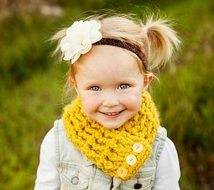

-

Gísli Christian Rúnarsson
Kisudeild
Foreldrar:
Rúnar Svan Vöggsson
Anna Sigríður Gísladóttir
Síða barns Útskráning - 
Rúnar Svan Vöggsson
Anna Sigríður Gísladóttir
Forfeður okkar álitu að jörðin sjálf væri flöt landkringla umkringd hafi en í hafinu var sjálfur Miðgarðsormur sem náði allan hringinn í kringum jörðina og beit hann loks í endann á sjálfum sér. Inn í miðju landi var svo heimstréð sjálft, askur Yggdrasils, og í tengslum við það voru hinir níu heimar eða alheimurinn. Í Miðgarði bjuggu mennirnir en fyrir utan Miðgarð voru Jötunheimar þar sem jötnar og hrímþursar bjuggu en eldjötnar bjuggu í Múspellsheimi. Á himninum bjuggu goðin í Ásgarði en vanir bjuggu í Vanaheimi. Neðst var Niflheimur þar sem Hel réði ríkjum en hún hafði vissa stjórn yfir öllum heimum. Það sem svo tengdi saman heim goða og manna var brúin Bifröst en í raun var hún regnboginn sjálfur.
Askurinn var verndartré goðanna og sameiginlegt tákn alls sem lifði. Askurinn hafði þrjár rætur en undir hverri rót var brunnur. Í Ásgarði var Urðarbrunnur, í Jötunheimi var Mímisbrunnur en í Niflheimi hjá Hel var brunnurinn Hvergelmir. Askurinn sjálfur var allra trjáa stærstur og tilkomumestur. Í efstu limum hans sat örn en á milli augna hans sat haukurinn Veðurfölnir. Örninn átti í sífelldum deilum við Níðhögg,Örninn og Veðurfölnir vængjaðan dreka er bjó við eina rótina, en íkorninn Ratatoskur hljóp stöðugt upp og niður tréð með skilaboð Ratatöskur á milli þeirra. Fjórir hirtir, Dáinn, Dvalinn, Duneyr og Duraþór, gengu um greinarnar og bitu af laufið en einnig var þar geitin Heiðrún sem lifði á laufinu og úr spenum hennar rann mjöður sá er einherjar Óðins drukku í Valhöll.
Við Urðarbrunn bjuggu þrjár máttugar systur, Urður, Verðandi og Skuld, en þær höfðu ótakmörkuð völd yfir örlögum manna. Þær sáu að auki um að varðveita rótina svo askurinn visnaði ekki. Höfuð Mímis bjó við Mímisbrunn en hann hafði áður verið einn af ásum. Hann var hálshöggvinn af vönum en Óðinn lagði jurtir við höfuð hans og gól yfir því galdra uns það lifnaði við. Mímir drakk daglega úr brunninum af Níðhöggur horninu Gjallarhorni og var höfuð hans því fullt af visku og speki. Mímir og brunnur hans geyma í sameiningu alla visku, framsýni og eftirhyggju eilífðarinnar. Hjá brunninum Hvergelmir bjó drekinn Níðhöggur og nagaði hann í sífellu rót Yggdrasils. Í kringum brunninn var allt umvafið þoku og mistri en Hvergelmir sjálfur var kraumandi og voveiflegur.